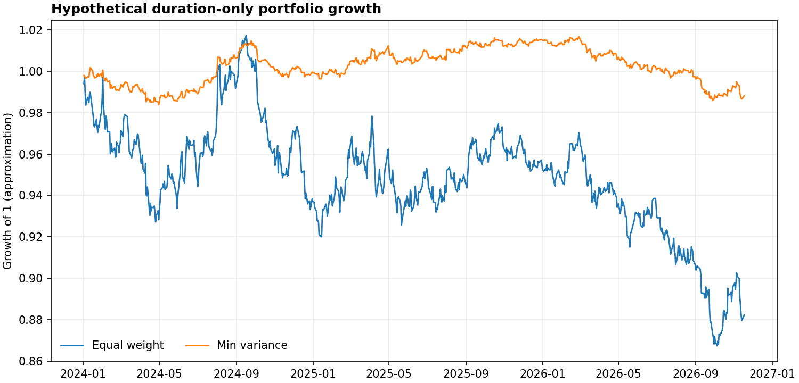

← All studiesSTUDY 04 · PUBLIC DATA
Portfolio Construction & Allocation
Completed out-of-sample allocation comparison using observed Treasury yield changes and explicit hypothetical duration-only bond proxies.
Not client work. Public-source analysis with stated hypothetical inputs where applicable. Not investment advice.
Observed results
| Weights · Equal weight · Bond 2y proxy return | 0.25 |
|---|
| Weights · Equal weight · Bond 5y proxy return | 0.25 |
|---|
| Weights · Equal weight · Bond 10y proxy return | 0.25 |
|---|
| Weights · Equal weight · Bond 30y proxy return | 0.25 |
|---|
| Weights · Min variance train 2020 2023 · Bond 2y proxy return | 1.00 |
|---|
| Weights · Min variance train 2020 2023 · Bond 5y proxy return | 0.00 |
|---|
| Weights · Min variance train 2020 2023 · Bond 10y proxy return | 0.0000 |
|---|
| Weights · Min variance train 2020 2023 · Bond 30y proxy return | 0.0000 |
|---|
| Equal weight out-of-sample · Observations | 719 |
|---|
| Equal weight out-of-sample · Annualized return (%) | -4.29 |
|---|
| Equal weight out-of-sample · Annualized volatility (%) | 7.06 |
|---|
| Equal weight out-of-sample · Max drawdown (%) | -14.74 |
|---|
| Min variance out-of-sample · Observations | 719 |
|---|
| Min variance out-of-sample · Annualized return (%) | -0.41 |
|---|
| Min variance out-of-sample · Annualized volatility (%) | 1.77 |
|---|
| Min variance out-of-sample · Max drawdown (%) | -3.04 |
|---|
| Optimizer success | Yes |
|---|
| Optimizer message | Optimization terminated successfully |
|---|
| Train end | 2023-12-31 |
|---|
| Test start | 2024-01-01 |
|---|
| Construction | duration-only zero-coupon proxies |
|---|

Method
Approximate daily return as negative assumed duration times the daily change in corresponding par yield. Optimize long-only minimum variance on 2020–2023, compare with equal weight in 2024–latest.
Source
https://home.treasury.gov/treasury-daily-interest-rate-xml-feed
Limitations
- Hypothetical zero-coupon-like exposures; not actual bonds or ETFs.
- Duration-only approximation excludes coupon carry, convexity, roll-down, financing, transaction costs and rebalancing costs.
- Historical test is not a forecast or investment recommendation.
Files
Built 2026-11-18 12:12 UTC from local raw inputs under .cache; raw files are excluded from Git.